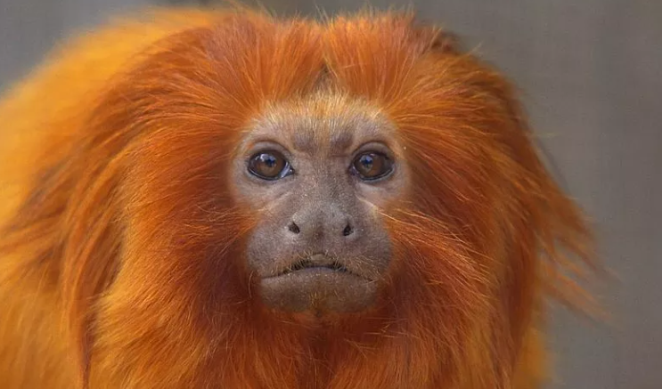

Mico-leão-dourado
O mico-leão-dourado (*Leontopithecus rosalia*) é um pequeno primata endêmico da Mata Atlântica brasileira. Conhecido por sua pelagem dourada brilhante, ele enfrenta ameaças devido ao desmatamento e à fragmentação do habitat.
Saiba mais